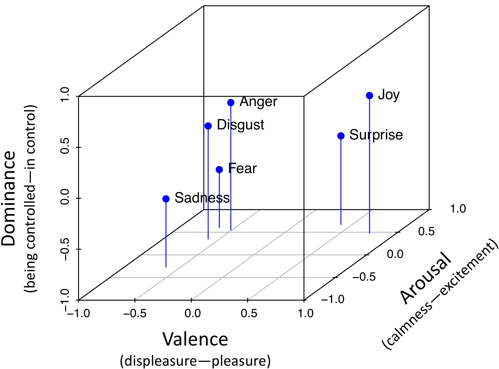

JeSemE is described in detail in our COLING 2018 paper "JeSemE: A Website for Exploring Diachronic Changes in Word Meaning and Emotion" and our ACL 2017 paper "Exploring Diachronic Lexical Semantics with JESEME", the following is a simplified overview.
The Valence Arousal Dominance (VAD) model of emotion assumes that affective states can be described relative to three emotional dimensions, i.e., Valence (corresponding to the concept of polarity, see above), Arousal (the degree of excitement or calmness) and Dominance (feeling in or out of control of a social situation). Emotion values for historical texts are calculated by combining word embeddings and contemporary emotion lexicons, see "Inducing Affective Lexical Semantics in Historical Language" for details. The following illustration shows the three-dimensional VAD space with the position of several emotion words.

Both Positive Pointwise Mutual Information (PPMI) and Pearson's χ2 measure how specific a combination of two words is. Both use the frequency of a word \(i\) or context word \(j\) to calculate the probability of finding one of them, as in \(P(i)\) respectively \(P(j)\).They then compare the expected probability of encountering both words \(P(i)P(j)\) with the observed frequency/probability \(P(i,j)\). Resulting values are normalized, so all associations for a word sum up to 1. JeSemE provides only values above 0.01, due to storage constraints.
PPMI favors infrequent context words and can be calculated with: $$PPMI(i,j) := max(log\frac{P(i,j)}{P(i)P(j)},0)$$
χ2 is regarded as more balanced, we use a normalized version calculated with: $$\chi^2(i,j) := max(log\frac{(P(i,j) - P(i)P(j))^2}{P(i)P(j)},0)$$
SVDPPMI uses singular value decomposition (SVD) to reduce the dimensionality of a matrix storing PPMI data. It produces word embeddings with quality similar to word2vec embeddings. See Levy (2015) for details. In contrast to word2vec, it is not affected by random initialization based realiability problems, see our papers "Bad Company—Neighborhoods in Neural Embedding Spaces Considered Harmful" and "Don’t Get Fooled by Word Embeddings—Better Watch their Neighborhood" for details.
Corpus of Historical American English, representative and balanced. Lowercased during preprocessing. See here for more information.
Deutsches Textarchiv 'German Text Archive', a representative (yet only vaguely balanced) corpus of ca. 1600-1900 German. Lemmatized during preprocessing. See here for more information in German.
The Google Books Ngram corpus covers about 6% of all books. We use the English Fiction and German subcorpus. It is unbalanced and known for sampling bias. English Fiction lowercased during preprocessing, German lemmatized and lowercased. See here for Google's visualization.
The Royal Society Corpus (RSC) contains the first two centuries of the Philosophical Transactions of the Royal Society of London. The corpus was lemmatized and lowercased during preprocessing. See here for its homepage.
Expects corpus, word1 and word2 as parameters, as in:
JeSemE.org/api/similarity?word1=day&word2=night&corpus=coha
Expects corpus and word as parameters, as in:
JeSemE.org/api/emotion?word=heart&corpus=coha
Expects corpus and word as parameters, Contexts can be requested for PPMI or χ2 as in:
JeSemE.org/api/typicalcontextppmi?word=day&corpus=coha
JeSemE.org/api/typicalcontextchi?word=day&corpus=coha
Expects corpus and word as parameters, as in: